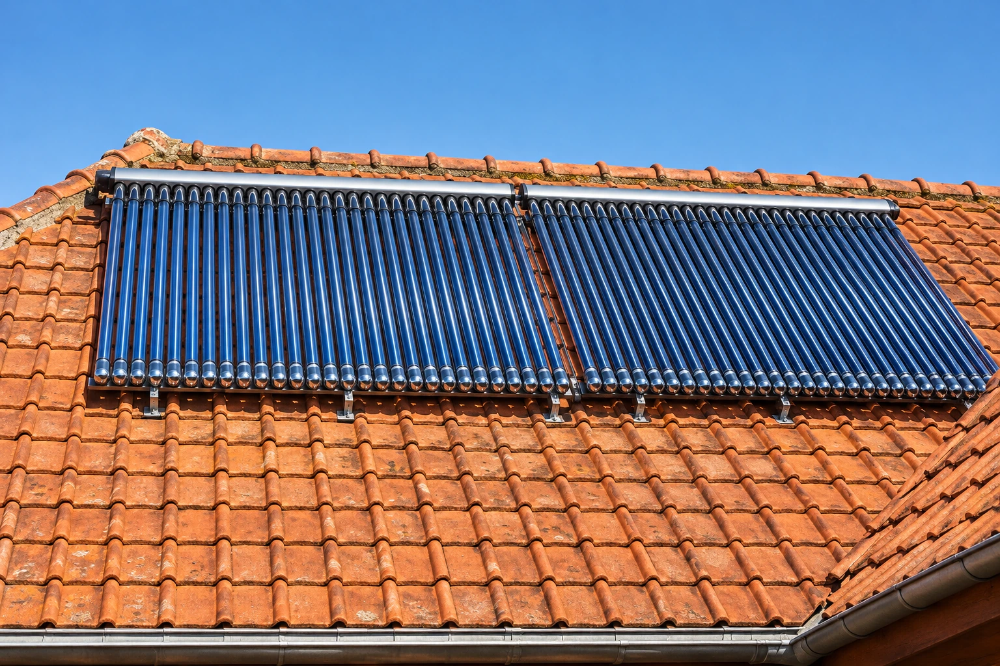
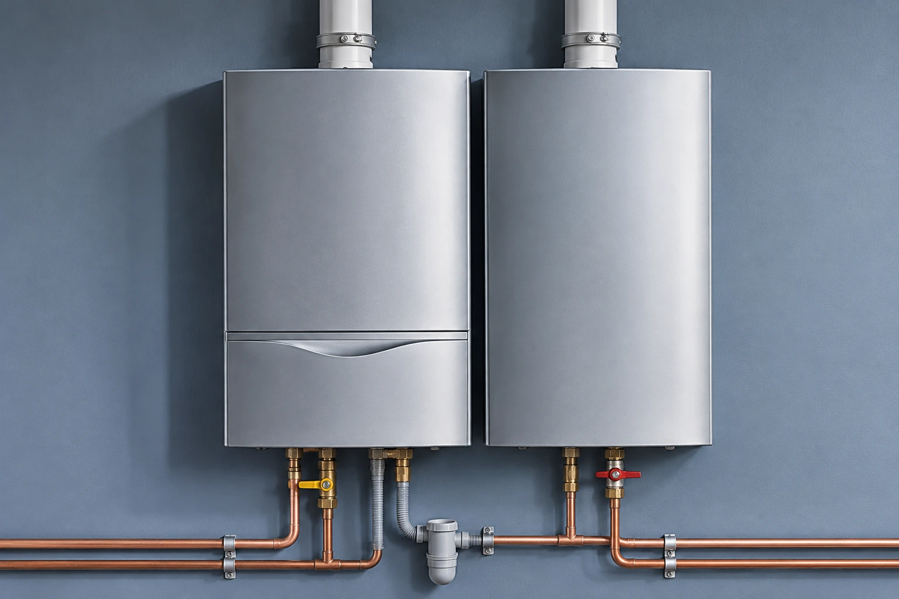
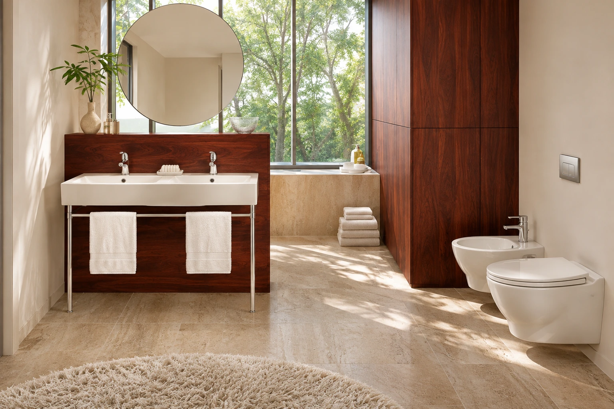
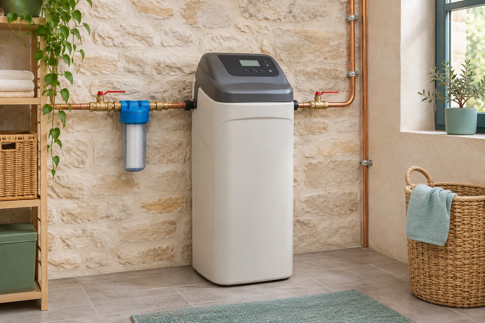
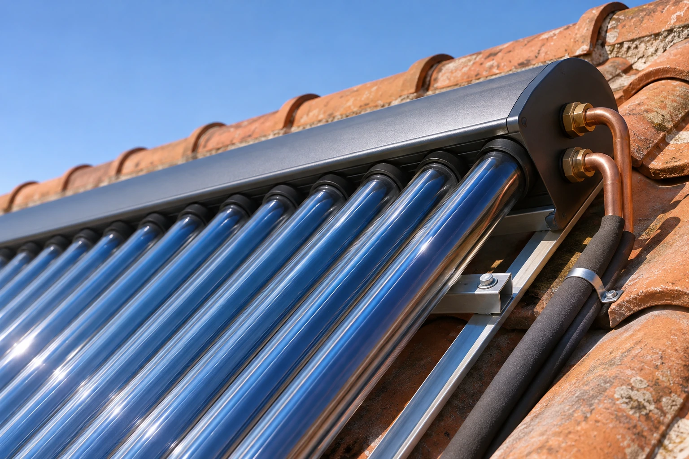
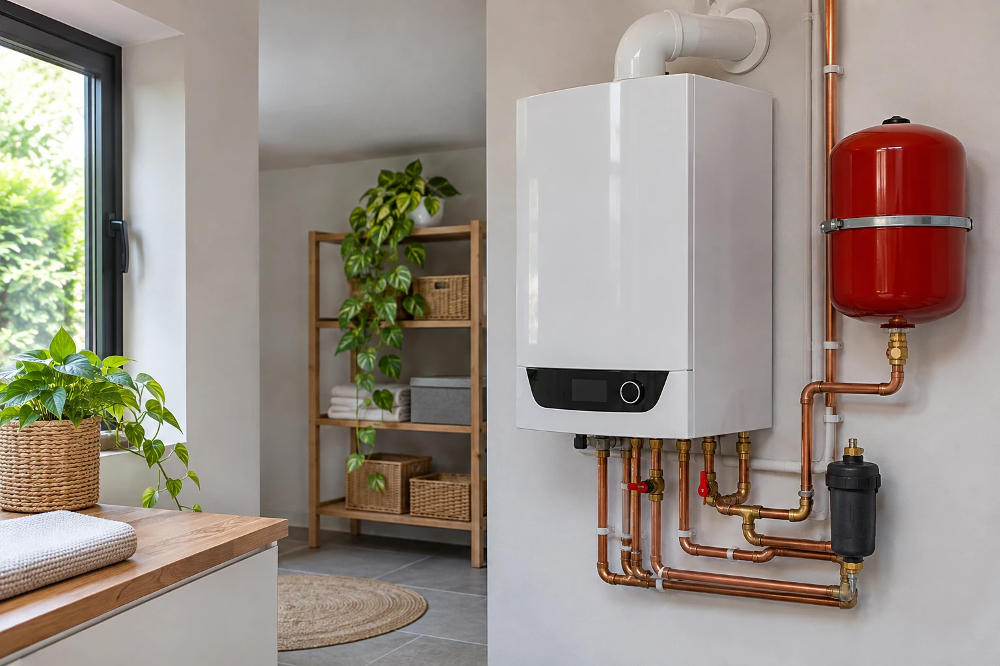
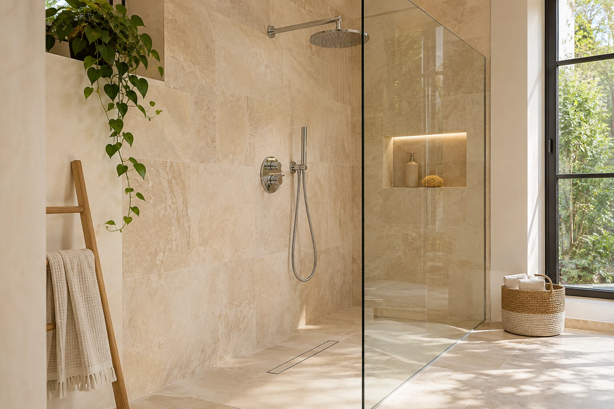
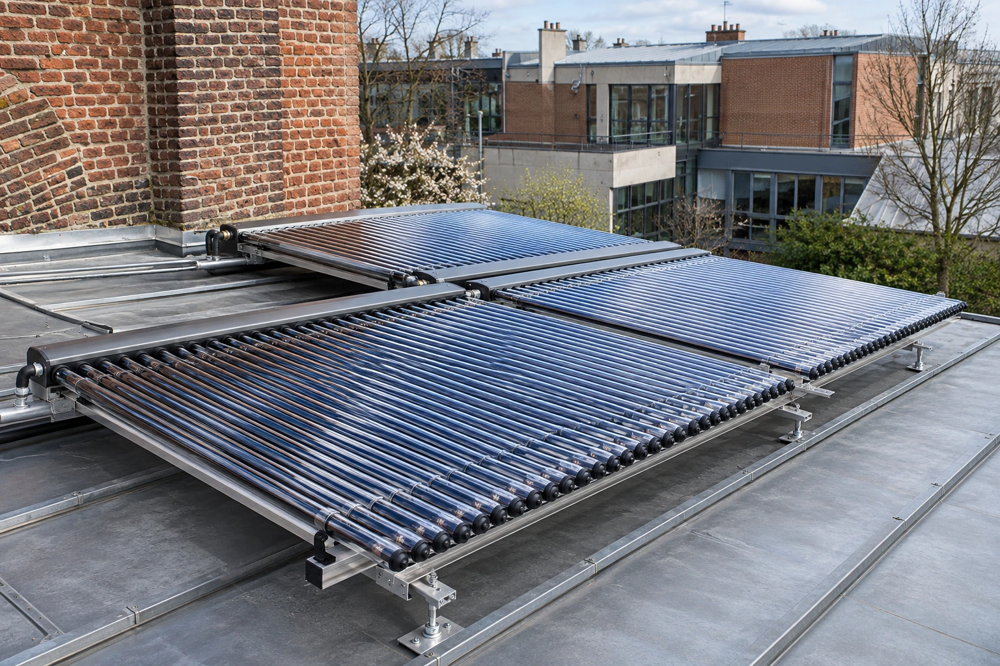

Guerrin Chauffage
Chauffage et plomberie
Nous installons, entretenons et dépannons vos équipements pour un habitat confortable. Chauffage, sanitaires et traitement de l’eau : parlons de votre besoin.

Le confort, au quotidien →Votre habitat, notre point de départ
Nous réunissons le chauffage, la plomberie et le traitement de l’eau autour d’un même objectif : vous aider à construire un projet cohérent pour votre habitat. Installés à Villeneuve-d’Ascq, nous prenons en charge la pose, l’entretien et le dépannage des équipements proposés par notre entreprise. Une installation à prévoir, une salle de bains à repenser ou un appareil à faire entretenir ? Nous échangeons avec vous sur votre besoin avant de définir la suite.

Chauffage
Chaudières, poêles, pompes à chaleur : pose, entretien et dépannage.
→
Plomberie
Sanitaires, réseaux et salles de bains : une place pour chaque usage.
→
Adoucisseurs
Adoucisseurs à sel, traitement au CO₂ et traitement UV.
→Nous intervenons sur les chaudières, les brûleurs, les poêles et les pompes à chaleur. Côté plomberie, nous accompagnons vos projets de sanitaires et de salles de bains, ainsi que les réparations de vos installations. Nous proposons également des adoucisseurs d’eau à sel et des solutions de traitement au CO₂. Chaque rubrique détaille les équipements et les travaux concernés.
Une autre façon de penser le chauffage
Le choix d’une énergie fait partie des questions à poser dès le début d’un projet. Solaire, géothermie, aérothermie ou bois : nous proposons plusieurs familles d’équipements à énergies renouvelables. Nous abordons ces possibilités en tenant compte du contexte que vous nous présentez. Vous pouvez découvrir ces solutions dans notre rubrique dédiée, puis nous contacter pour discuter de votre installation et des points à examiner.
Explorer les énergies renouvelables →
Un échange pour avancer
Nous établissons des devis gratuits et des études personnalisées. Pour préparer notre échange, indiquez le type d’équipement concerné, la nature de votre projet et les informations dont vous disposez déjà. Notre galerie rassemble des illustrations recréées à partir des visuels de notre ancien site : elle permet de découvrir nos univers d’activité. Pour une demande concrète ou un entretien de chaudière, retrouvez nos coordonnées et l’accès à la prise de rendez-vous sur la page Contact.



Le premier pas ? En parler.
Devis gratuits et études personnalisées.
Nous contacter →139 rue Gaston Baratte
59493 Villeneuve-d’Ascq
Visuels d’illustration recréés par IA, non représentatifs de chantiers réels.